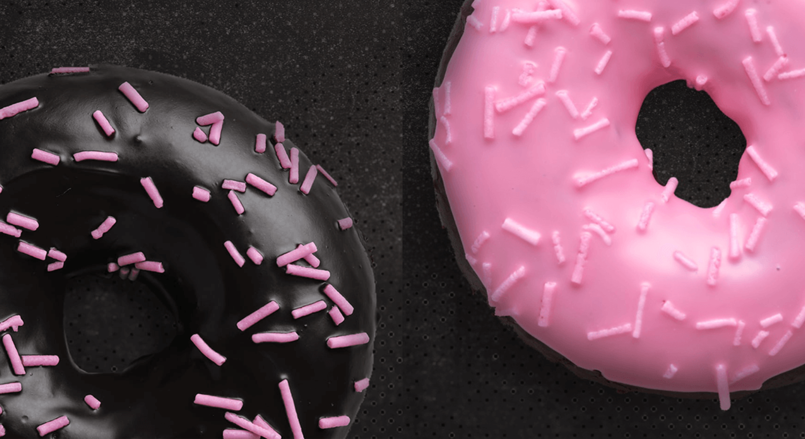

Odin Donut
Description
The Odin Donut can be described holistically as one of the best desserts. Your eyes are guaranteed to glaze over the moment you spot one of these delicious treats. Even the most well-rounded chef understands the importance of perfecting such a delectable treat. Now let's roll out our finest culinary skills and sprinkle in some creativity to make the best donuts ever.
Ingredients
- 2 cups all-purpose flour
- 3/4 cup granulated sugar
- 2 teaspoons baking powder
- 1/2 teaspoon baking soda
- 1/2 teaspoon salt
- 1/2 teaspoon ground cinnamon
- 3/4 cup buttermilk
- 2 large eggs
- 1/4 cup unsalted butter, melted
- 1 teaspoon vanilla extract
Steps
- Preheat your oven to 375°F (190°C). Grease a donut pan.
- In a large mixing bowl, whisk together the dry ingredients: flour, sugar, baking powder, baking soda, salt, and cinnamon.
- In a separate bowl, whisk together the wet ingredients: buttermilk, eggs, melted butter, and vanilla extract.
- Add the wet ingredients to the dry ingredients and stir until just combined. Be careful not to overmix; it's okay if there are a few lumps.
- Spoon or pipe the batter into the prepared donut pan, filling each mold about 2/3 full.
- Bake in the preheated oven for 10-12 minutes or until a toothpick inserted into a donut comes out clean.
- Allow the donuts to cool in the pan for a few minutes, then transfer them to a wire rack to cool completely.
- Glaze or decorate with powdered sugar, chocolate, or your favorite toppings!